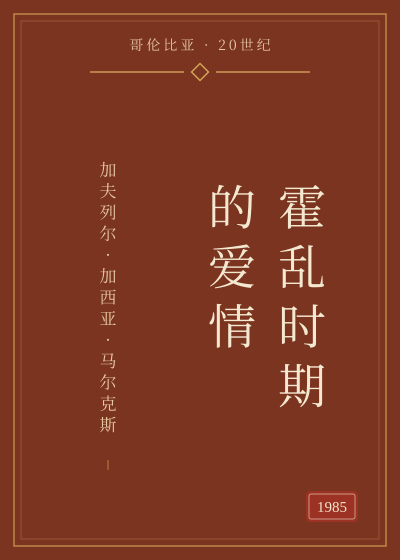
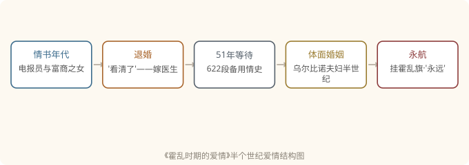

霍乱时期的爱情
一、基本信息
| 作者 | 加西亚·马尔克斯 |
|---|---|
| 成书/出版 | 1985年出版（Britannica） Gabriel García Márquez — Encyclopaedia Britannica (by Roberto González Echevarría)（百科全书） |
| 国别/地区 | 哥伦比亚 |
| 时代 | 现当代 · 20世纪 |
| 体裁 | 长篇小说 |
| 语言 | 西班牙语 |

二、创作背景
创作（Britannica）：1985年出版——作者父母青年时代的爱情故事为底本（其父电报员求爱经历——通说待核），写于《百年孤独》 fame 之后的加勒比海岸。
与《百年孤独》的对照：马孔多的魔幻退场，加勒比港城的写实登场——'更具古典气质的晚期杰作'（通说）。
改编：1985年后电影（2007年 New Line，贾维尔·巴尔德姆主演——Britannica：Love in the Time of Cholera film (2007, Javier Bardem)——作家条记载）。
三、内容脉络
开篇倒置：著名医生赫雷米亚·德乌尔阿莫自杀，留下'遗体是六十一岁的'——而他与情人约五十年的秘密情史在遗书中说明（通说）。他的密友弗洛伦蒂诺·阿里萨赶来吊唁——在灵堂偶遇费尔明娜·达萨：'费尔明娜，我等这个机会等了五十一年九个月零四天'（原文意，公有领域）。
第一段（青年）：19世纪末加勒比港——电报员之子弗洛伦蒂诺与富商之女费尔明娜以情书与 Telegraph 相恋（'他们像老年人一样谈情，像孩子一样做爱'——原文意，待核）；被费父棒打鸳鸯，费尔明娜旅行归来后'看清楚了'，退婚，嫁给乌尔比诺医生——医学、秩序与'安稳'的选择。
第二段（等待）：弗洛伦蒂诺在船务公司苦熬五十一年，以622个'备用情妇'的笔记本对抗孤独（数字为通说待核）；乌尔比诺夫妇的婚姻在体面与琐屑中度过半个世纪（'他们像被生活伤害的一对老夫老妻'——原文意，待核）。
结局：乌尔比诺爬梯子抓鹦鹉摔死；葬礼当晚，76岁的弗洛伦蒂诺向72岁的费尔明娜重申爱情——二人乘'新忠诚号'挂霍乱旗沿马格达莱纳河永航——'船长看了看费尔明娜……问我们这艘船到底要开到什么时候——永远'（结尾原文意，待核）。
四、主要人物表
| 人物 | 身份 | 说明 |
|---|---|---|
| 弗洛伦蒂诺·阿里萨 | 电报员→船务董事长 | 以半个世纪的等待为职业的恋人——'write 622 long-term liaisons'（通说数字待核） |
| 费尔明娜·达萨 | 富商之女→医生夫人 | 从浪漫少女到势利主妇到重生恋人的完整弧线 |
| 胡维纳尔·乌尔比诺医生 | 医生 | '秩序与科学的丈夫'——诚实而乏味的爱情 |
| 赫雷米亚·德乌尔阿莫 | 老棋手·情人 | 开篇的死者——'爱情的另一种形态' |
| 美国寡妇芭芭拉·林奇、萨拉·诺列加等 | 622之一的群像 | 欲望的编年史（通说） |
五、主题与艺术特点
- 爱情的形态学：激情（青年）、婚姻（中年）、等待与黄昏之恋（老年）——'爱情的百科全书'（通说）。
- 时间与衰老：'爱情与年龄无关'——两位老人在船上的第二春对抗整个社会对老年的想象（通说）。
- 霍乱与爱的症状学：'相思病的症状与霍乱相同'（原文意，待核）——疾病与激情的隐喻互文。
- 加勒比的历史底色：内战、瘟疫、航行——马孔多之外的加勒比写实史（通说）。
- 艺术特点：传统叙事（与《百年孤独》的魔幻不同）、开篇倒置、结尾的'永航'。
六、影响与评论
- Britannica（García Márquez 条目）：Love in the Time of Cholera (1985) 为其后《百年孤独》最重要的作品。
Gabriel García Márquez — Encyclopaedia Britannica (by Roberto González Echevarría)（百科全书） - Britannica：2007年电影改编（Javier Bardem 主演）。
Gabriel García Márquez — Encyclopaedia Britannica (by Roberto González Echevarría)（百科全书） - 世界销量与课选：被译成数十种语言（通说待核）。
Gabriel García Márquez — Encyclopaedia Britannica (by Roberto González Echevarría)（百科全书） - 中文出版：杨玲译本（南海出版公司，通说待核）。
Gabriel García Márquez — Encyclopaedia Britannica (by Roberto González Echevarría)（百科全书）
七、阅读建议
- 篇幅长（约40万字）而时间跨度50年——记住三条爱情线的年代锚点。
- 老年性爱描写的坦率——理解其'对抗年龄歧视'的意图。
- 622个情妇与'守身等待'的悖论——作者有意为之的道德复杂性。
- 杨玲译《霍乱时期的爱情》（南海出版公司，2012，通说待核）：通行本。
- 英译：Edith Grossman 译（1988，通说待核）。
通读 → 精读开篇自杀章与结尾'永航'章 → 对照《百年孤独》看马尔克斯晚期风格的转变。
八、待核实
- 首版细节（1985年西班牙出版社 Oveja Negra？通说）待核。
- 父母恋爱原型（电报员加西亚与富商女）的传记细节待核。
- 杨玲译本信息待核。
- 2007电影改编细节待核。
本页主要来源
加西亚·马尔克斯的其他收录作品：百年孤独